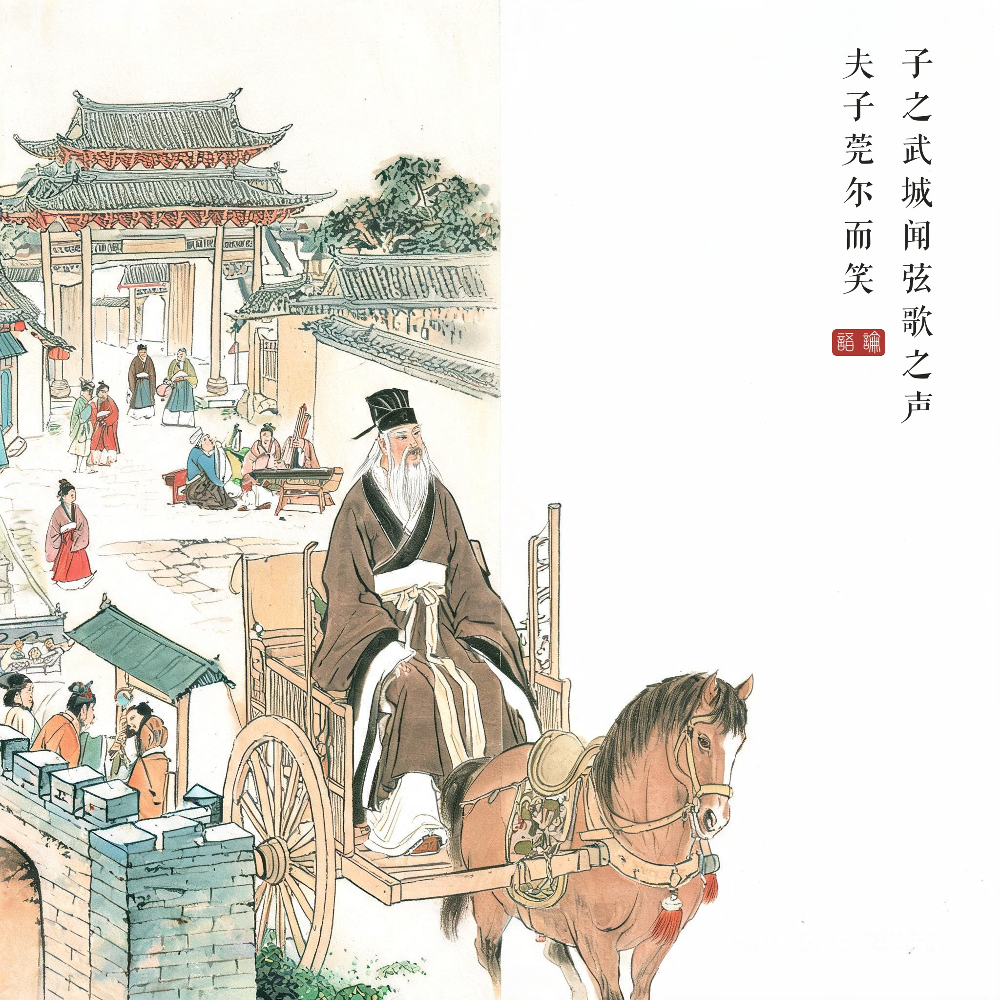
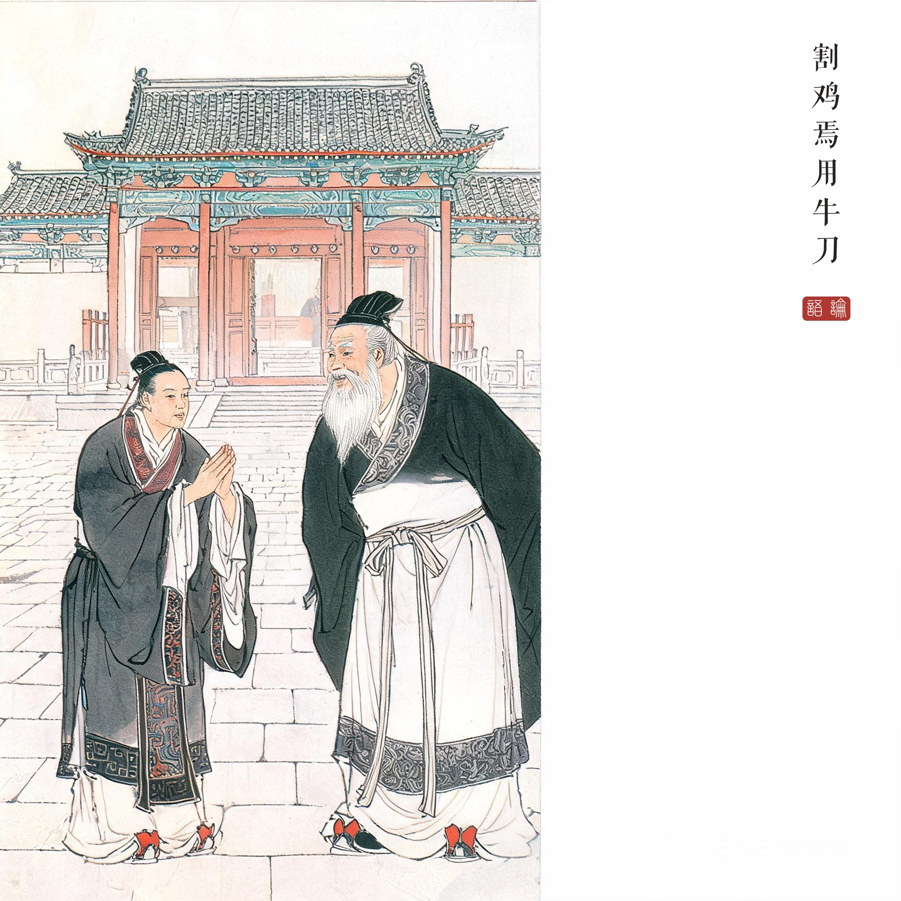

《论语 · 阳货第十七》。子游，姓言名偃，吴人，孔门文学科高弟，时任武城宰。
（据 daizhigev20《论语》底本节录，题款诸句见组画清单）
孔子到武城，听见弦歌之声。夫子微笑："杀鸡哪里用得着宰牛刀？"子游答："从前偃听夫子说过：君子学道则爱人，小人学道则易使。"孔子说："你们几位，言偃说得对——我刚才只是开玩笑。"
这段对话常被称为《论语》中最有人情味的一幕：老师玩笑，学生认真，老师立刻认错——"前言戏之耳"六字，是圣人罕见的一次自我更正。
弦歌如何成为治绩。子游用礼乐治一座小城，在春秋是罕见的治理方式—— usual 做法是赋税刑罚。弦歌之声入夫子之耳，意味着教化真实落地了：百姓不是被管理，而是被教化。"割鸡焉用牛刀"的玩笑反着证明了孔子内心的大欣喜。
"学道则爱人"的吏治观。子游引用的正是夫子的教导——治民先治心，治心先以乐。这一章成为后世地方官"兴学弦歌"的政治理想原型；杜甫诗"致远恐泥"反用牛刀之典，苏轼《策略》议论皆源于此。
读画小识。第一幅取城外道中闻乐：夫子在车中侧耳，乐声以街巷间百姓怡然之状暗示；第二幅官署前对话：子游拱手而立，神色认真——与夫子含笑的打趣形成张力；第三幅夫子转身向弟子朗声改口，是全回最轻松的画面——圣人认错的瞬间，被画成了一场师生的笑谈。